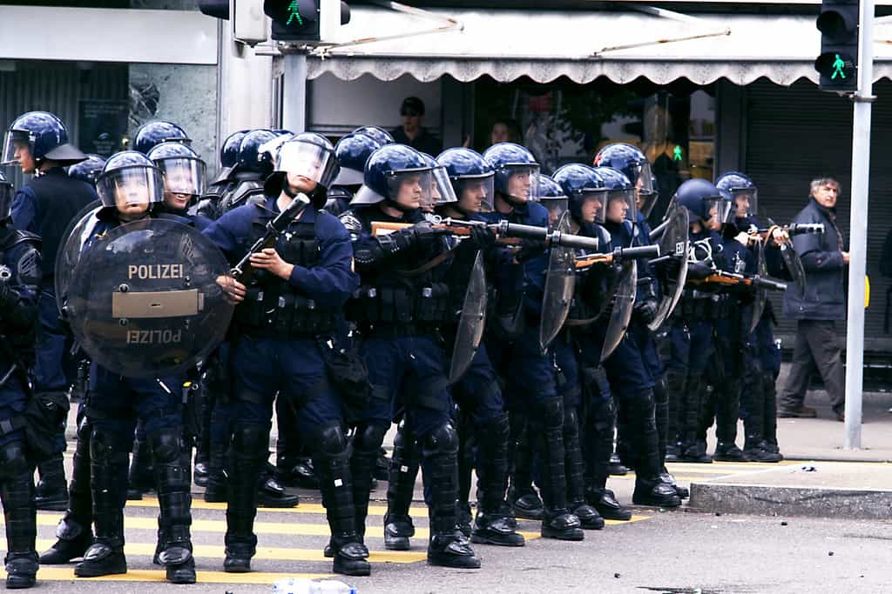
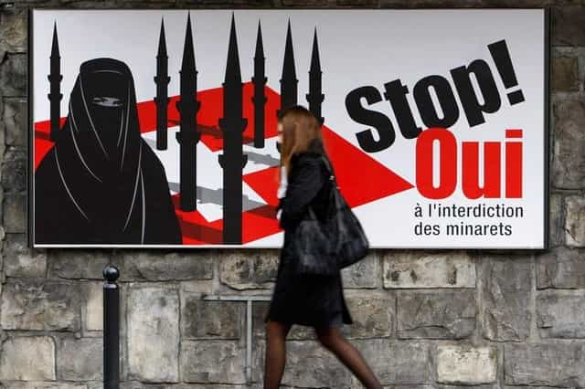
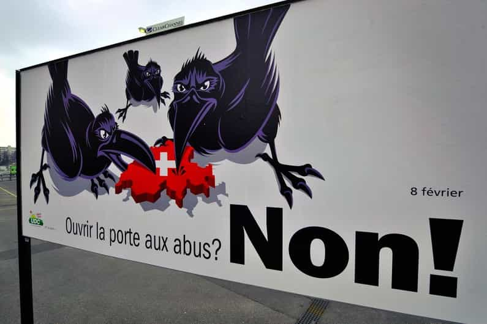
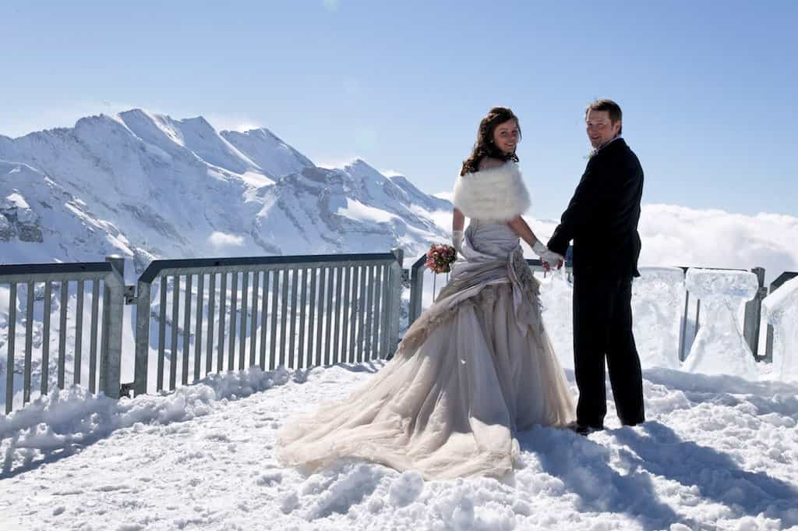
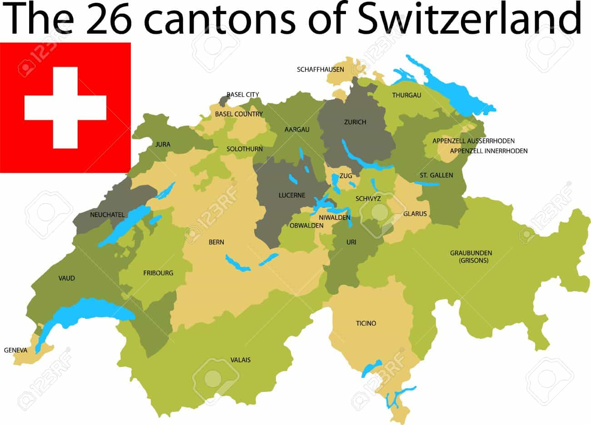
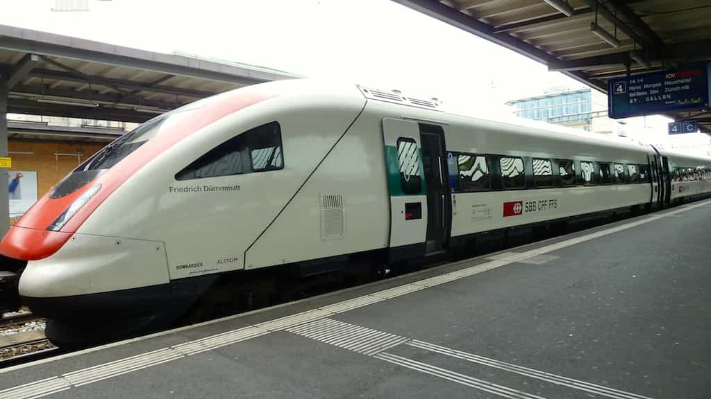
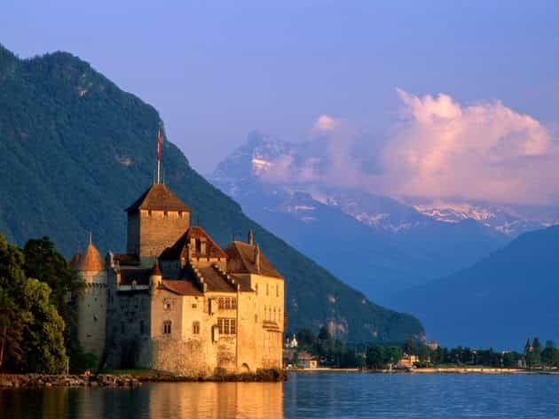

Recently I went to Switzerland, partly to see if it really is the best country in the world. In this piece I will argue that this reputation indeed is well-deserved.
The World Factbook tells us the following about Switzerland:
The Swiss Confederation was founded in 1291 as a defensive alliance among three cantons. In succeeding years, other localities joined the original three. The Swiss Confederation secured its independence from the Holy Roman Empire in 1499. A constitution of 1848, subsequently modified in 1874, replaced the confederation with a centralized federal government.
Switzerland’s sovereignty and neutrality have long been honored by the major European powers, and the country was not involved in either of the two world wars. The political and economic integration of Europe over the past half century, as well as Switzerland’s role in many UN and international organizations, has strengthened Switzerland’s ties with its neighbors. However, the country did not officially become a UN member until 2002. Switzerland remains active in many UN and international organizations but retains a strong commitment to neutrality.
If one goes on and look at specific dimensions, linked to economics, politics, society and culture, at least 10 are worthy of consideration and serve as proof of the nation’s high quality.
1. High average incomes and low taxes
The monthly median gross salary of jobholders, on all educational levels, is 5979 (roughly $6180 US dollars). Although the financial service sector, and related such, make up a large part of the job cluster, blue collar workers earn a lot as well. Only Norway pays one hour’s service more than Switzerland.
Needless to say, the cost of living is also high in general, but like in Norway it is possible to find a situation in which a worker can save a lot or have a good balance between saving and consumption.
For instance, if a person earns 6000 Swiss francs per month and the rent for a spacious apartment in Zurich is 2000 Swiss franc monthly, then a large bulk of money is still left since the tax burden in Switzerland is one of the world’s lowest.
2. Low crime rates
Crime statistics are a bit fuzzy and depends on a variety of factors and can differ from one category to another. One can also argue that more advanced crimes might be linked to Switzerland’s clandestine banking system.
However, regarding both petty crime and violent crime, those two categories that generally have the most significance for an individual, Switzerland is indeed a very safe country. For instance, its largest city, Zurich, has virtually no no-go areas.

3. A good balance between nationalism and globalism
Switzerland is linked to several international institutions, such as NATO, the U.N. and various globalist associations such as the World Economic Forum in Davos. The “customer-oriented” bank system, although more conformed to general European and global standards lately, is yet another such dubious element. Additionally, it has several significant bilateral agreements with the EU.
However, since a large share of Swiss people are nationalists and the national conservative and right-wing populist Swiss People’s Party is the country’s largest (29.4% in 2015), an effective balance has been created. Formed in 1971 as a party for both urban entrepreneurs and farmers, SVP has become more populist and radical under the leadership of wealthy businessman Christoph Blocher and farmer Toni Brunner in the 2000s and forward. It also has a strong and well-educated youth section, SVP Junge, and is overall much more competent than many other similar parties around Europe.
Benefiting from direct democracy, SVP has suceeded in several anti-Islam and immigration-restrictionist referendums that they have set off by collecting more than 100,000 petition signatures from Swiss citizens. For instance, after a referendum in 2009, minarets are banned in public and both EU migrants and non-EU migrants are restricted by specific quotas.

Ethnically, it is over 90% European. The largest ethnic groups are German 65%, French 18%, and Italian 10%, while other such make up only 6% (mostly people from the Balkans). Still if a non-European can contribute and integrate well he can move there permanently and be granted a citizenship after 10 years without social welfare.
The economic policies, especially those of SVP, is a mix between classic liberalism and pragmatic conservatice policies with a strong protectionist element. Those in turn perfectly balance the globalism that is also a feature among the more left-leaning, largely French-speaking segments in Geneva and other cities on the country’s Western border. Both rural farmers and urban workers benefit from the system, which constitutes a fruitful compromise: it is open enough to avoid isolationism but nationalist enough to make it self-subsistent, wealthy, and largely independent.

4. Social conservatism
This point is linked to and largely overlaps the national conservatism among the Swiss German-speaking share of the population. Although a distinctively secularism-oriented state, Christianity, both Catholicism (38%) and Protestantism (26%), are integral parts of the country’s culture and one finds much less of post-Marxism, feminism and social justice warriors, although they are part of the liberal and social-democratic segments of the populace.
However, as a modern Western country it is at least one step toward complete liberation of female forces. Women’s suffrage was introduced after a referendum in 1971. In 1991, the canton Appenzell Innerrhoden was the last to allow women the vote on local issues. Yet the social conservative elements within the right counter the degeneracy. As expected, divorce rates are lower in the more rural than the urban areas. Another facet of social conservatism is the mandatory military service for men.

5. Regionalization of political influence
Somewhat similar to the United States, Switzerland builds on the confederation of 26 cantons with more or less distinctive regional features and preferences. Coupled with the direct democracy mentioned above, fertile soil for self-determination is the case. A person with the intent to move to Switzerland permanently can thus choose the one which conforms the most to one’s particular preferences.

6. Excellent infrastructure
The trains in Switzerland are some of the best in the world, even though the price levels can be repellent. For instance, I paid about 70 francs for a round-trip ticket between Zurich and Konstanz (in Germany, just at the Swiss border, near Bodensee). Other aspects of the infrastructure are likewise of very high standard. Switzerland is overall a high-tech country.

7. Beautiful nature
Switzerland has a temperate inland climate with cold winters and quite humid summers.Thirty-four degrees Celsius in August are not rare. Some positive characteristics are the Alps, picturesque small villages, and lots of high hills. The views are stunning, especially in the Alps and around Bodensee. Also parts of Zürich, the Old Town in particular, are very easy on the eye.

8. A great geographic location in Europe
The country is also located next to Austria, Liechtenstein, Germany, France and Italy, and not far from Slovenia and Croatia either, which makes its position excellent for a traveler. Eastern, Northern and Southern Europe are also within reach.

9. High gun ownership rate
Although the comparisons with the U.S. are misguided since it fails to distinguish that the gun ownership among non-criminals in the U.S. generally works, Switzerland has a very high gun ownership rate and yet very little violent crime. Every freedom-loving masculine man should be pleased by this condition.

10. No Islamic terrorism (yet)
Muslims (nearly 5% of the Swiss population) are not allowed to behave just as they please and the total number of Muslims is in relative terms much lower compared to neighboring Austria, France and Germany. This, paired with a rather strong military capacity, makes terror attacks less likely to occur.
Yet it might of course happen and some claim that is only a matter of time before it eventually does.

In summary
There are pros and cons with every country, and Switzerland is no exception. Interrelated phenomena such as secularism (which often goes hand in hand with increasing secularisation), liberalism, post-Marxism and globalism have affected the alp nation as well. However, in terms of degree there are palpable differences between Switzerland and many other European countries. It has managed to find a more appropriate balance between nationalism and globalism with a distinctive conservative flavor.
Given the low taxes, high incomes and standards of living, it is one of the best countries to migrate to and live permanently in. An English-speaking person should have no problem to learn Swiss German and abide by the law to the extent that one will be granted a citizenship in due time.
Read More: 4 Reasons You Should Visit The Island Of Malta